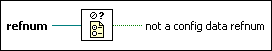

Not A Config Data Refnum VI
Owning Palette: Configuration File VIs
Requires: Base Development System
Determines whether a configuration data refnum is valid.
This VI considers a configuration data refnum to be invalid if you do not open the reference with the Open Config Data VI, the file referenced does not exist, or the reference is already closed when passed to this VI.

 Add to the block diagram Add to the block diagram |
 Find on the palette Find on the palette |